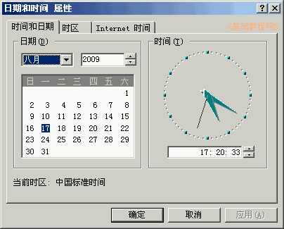
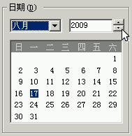
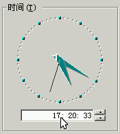
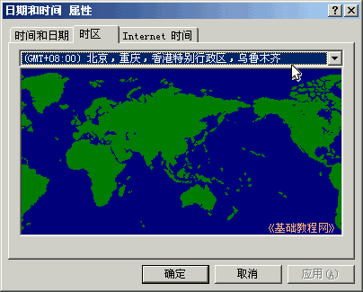
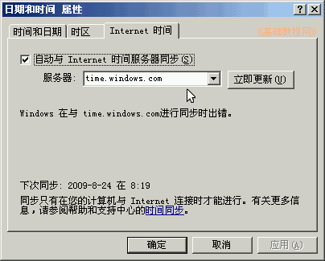

控制面板基础教程
作者：TeliuTe 来源：基础教程网
日期和时间选项，可以查看和调整日期时间，下面我们来看一个练习；
1、日期和时间
1）进入经典视图，点“日期和时间”图标出来一个面板；
2）面板里面包括时间和日期、时区和Internet 时间三个标签；

2、设置时间
1）在日期和时间面板里，可以点击年和月的下拉按钮和微调按钮进行设置，日期可以点击选择；

2）在旁边的区段里，要先在下面的时间里，在时、分或秒里点一下，放入光标插入点后，点微调按钮调整；

3）“时区”里可以设置自己的所在位置，一般看一下即可不用更改；

4）在“Internet 时间”里，可以设置是否与网络时钟同步校对时间，可以选择一个网络时钟；

本节学习了日期和时间的基础知识，如果你成功地完成了练习，请继续学习下一课内容；
本教程由86团学校TeliuTe制作|著作权所有
基础教程网：http://teliute.org/
美丽的校园……
转载和引用本站内容，请保留作者和本站链接。